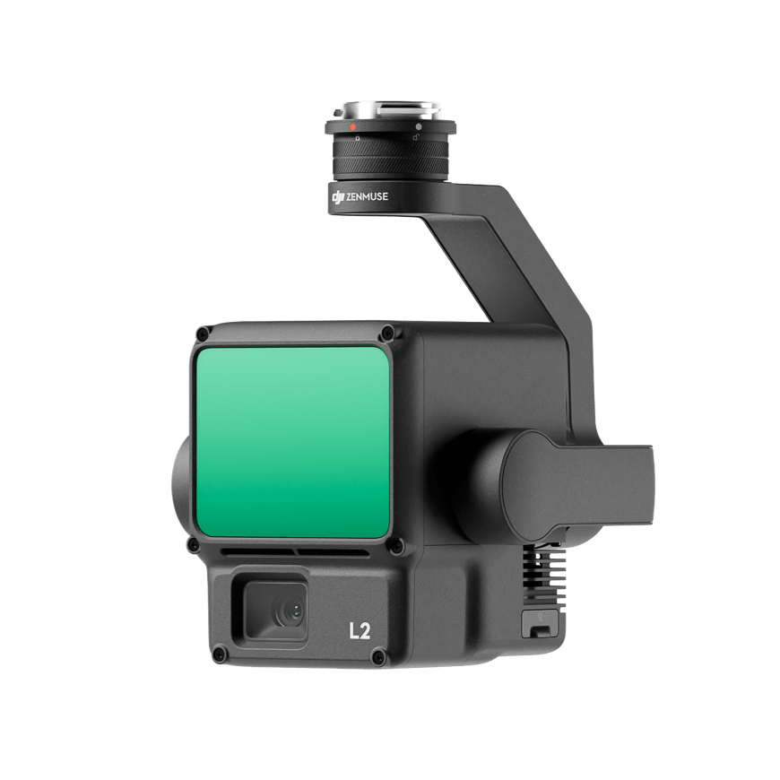
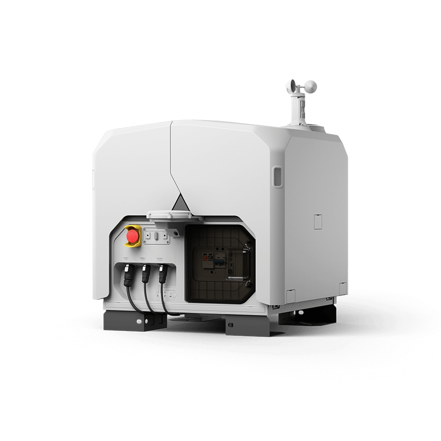
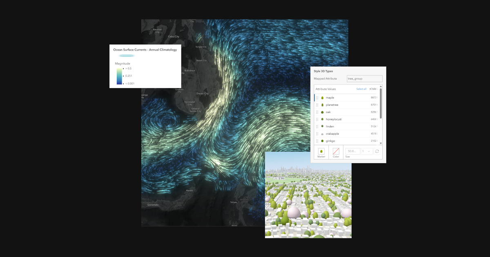
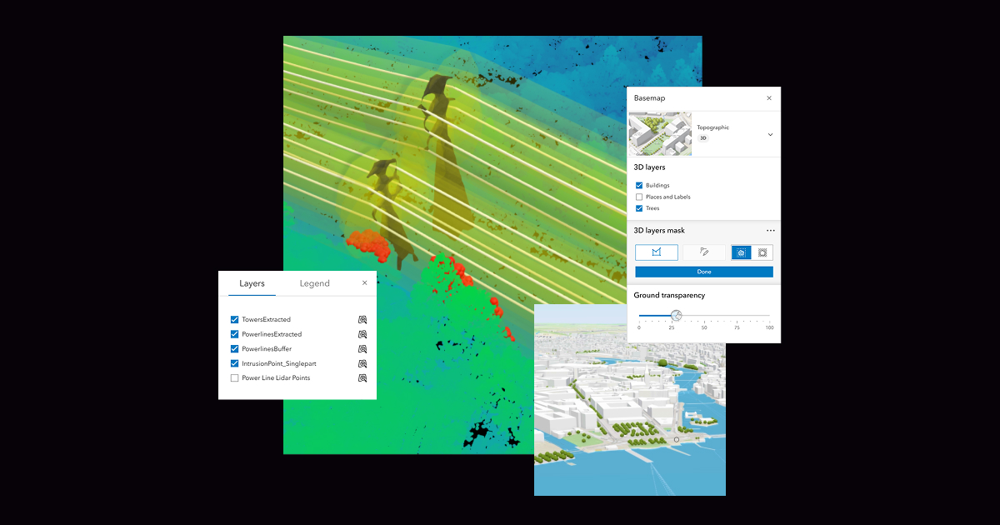
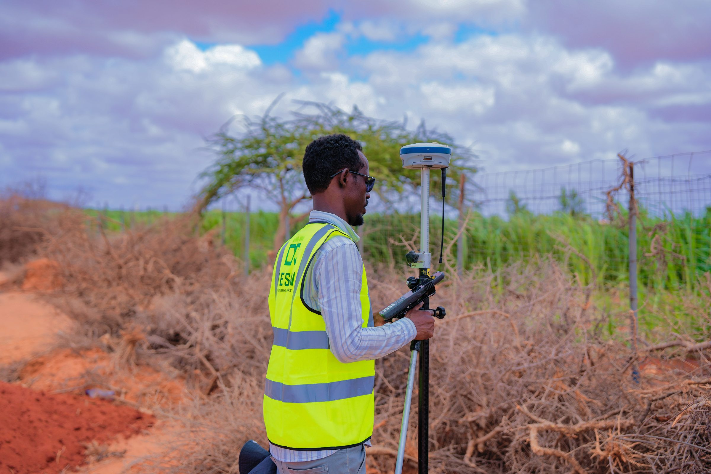
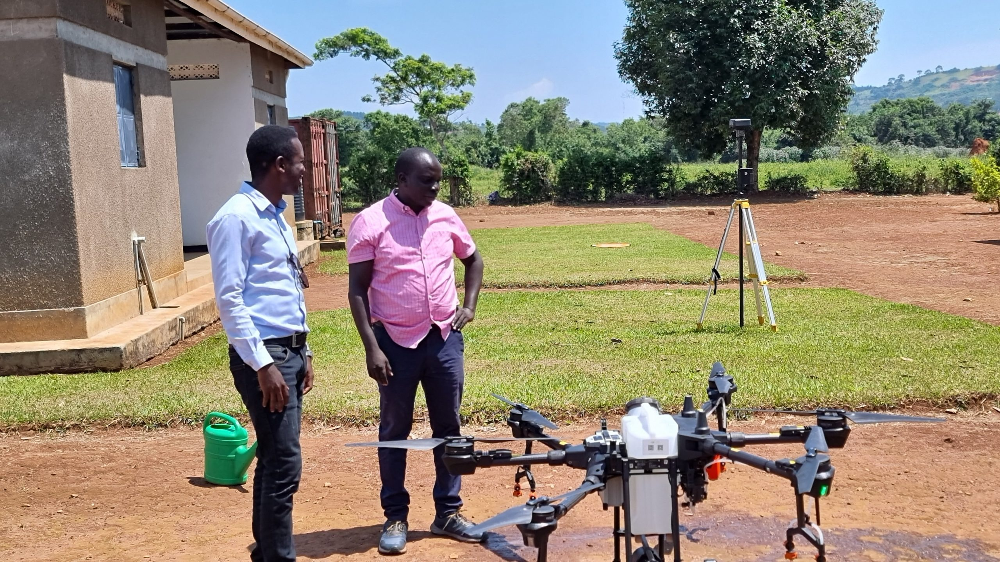
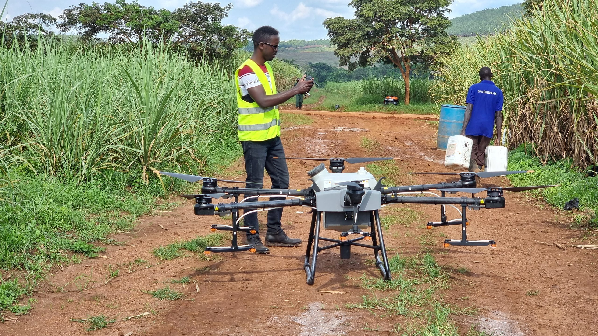
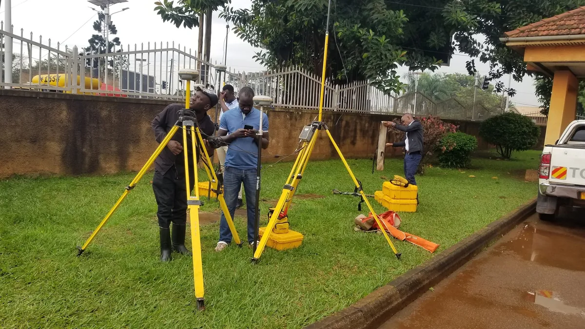
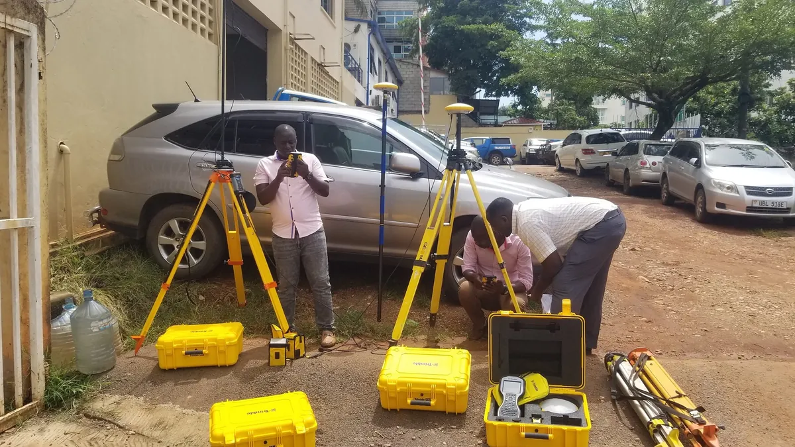
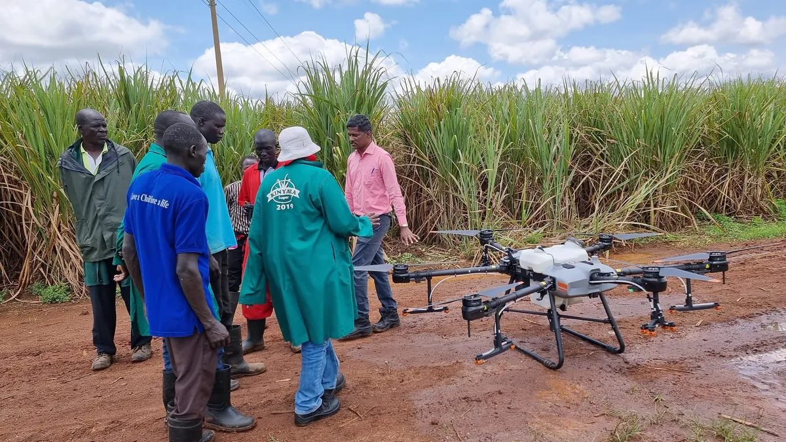

Trimble Geospatial
Trimble R12i GNSS With ProPoint & TIP Tilt
S-Series Robotic Total Stations & Trimble Access

 TrimbleGNSS · Total Stations · Scanning
TrimbleGNSS · Total Stations · Scanning DJI EnterpriseDrones · LiDAR · Dock
DJI EnterpriseDrones · LiDAR · Dock Esri ArcGISGIS & SDI
Esri ArcGISGIS & SDI Spectra GeospatialGNSS & Robotic Stations
Spectra GeospatialGNSS & Robotic Stations Nikon PrecisionOptical Survey
Nikon PrecisionOptical Survey US RadarGround Penetrating Radar
US RadarGround Penetrating Radar Seafloor SystemsHydrographic Survey
Seafloor SystemsHydrographic Survey IBM Tape StorageEnterprise Data Archive
IBM Tape StorageEnterprise Data Archive XGRIDSHandheld SLAM LiDAR
XGRIDSHandheld SLAM LiDAR








Integrated hardware, aerial mapping, and spatial software engineered to work as one connected workflow — from the field to the office.
Trimble R12i GNSS With ProPoint & TIP Tilt
S-Series Robotic Total Stations & Trimble Access
Matrice 350 RTK Industrial Survey Drone
Mavic 3 Enterprise & Thermal Multispectral
ArcGIS Pro Advanced Desktop Analytics
ArcGIS Enterprise & Spatial Data Infrastructure
FOCUS 35 & FOCUS 50 Robotic Stations
SP85 & SP60 GNSS RTK Receivers
Nikon XS & XF Series Mechanical Stations
High-Accuracy Optical Auto-Levels
Lixel L2 Handheld Mobile SLAM Scanner
Real-Time Colored 3D Point Clouds
Quantum Imager Triple-Frequency GPR
Underground Pipe & Cable Line Tracing
EchoBoat Autonomous Survey USV
Singlebeam & Multibeam Sonar Systems
Carlson SurvCE & SurvPC Field Software
Carlson Mining, Geology & Civil Modules
Integrated hardware, aerial mapping, and spatial software engineered to work as one connected workflow.

Trimble, Spectra & Nikon GNSS receivers, robotic total stations, and 3D laser scanners calibrated to millimeter accuracy.
Explore hardware
DJI Enterprise drone fleets capturing photogrammetry, thermal imagery, and high-density LiDAR across vast project sites.
Explore aerial
Esri ArcGIS deployment and spatial data infrastructure that turns raw field capture into decision-ready intelligence.
Explore GISKACO Systems is Uganda's premier multidisciplinary technology company, combining world-class surveying hardware, cutting-edge drone photogrammetry & LiDAR, enterprise GIS integration, and a certified equipment calibration facility.
We don't just supply equipment — we engineer the complete spatial workflow so your projects run accurately, on time, and on budget.

From large-scale national infrastructure and mining pits to municipal cadastre and disaster response, we configure specialized hardware, analytics, and service packages built for Africa's operating realities.
Stockpile volumetric audits with drone LiDAR, pit slope stability monitoring with robotic total stations, blast hole pattern navigation, and Carlson mine design workflows.
Learn moreCentimeter-accurate road corridor surveys, machine control positioning, bridge deflection monitoring, and direct BIM-to-field stakeout with Trimble Access.
Learn moreEstablishing national geodetic CORS networks, legal boundary cadastre, digital land registries, and enterprise spatial data infrastructure (SDI) with Esri ArcGIS.
Learn morePower transmission line clearance modeling with drone LiDAR, pipeline routing, and non-destructive subsurface pipe/fiber tracing with US Radar GPR.
Learn moreMultispectral NDVI drone surveys for variable-rate fertilization, forest canopy biomass estimation, water basin catchment modeling, and environmental impact assessments.
Learn moreRapid drone situational awareness, refugee settlement micro-planning, flood inundation modeling, and mobile spatial data collection for NGOs and UN agencies.
Learn moreIllustrative examples of the type of work we deliver, not named case studies with client-attributed results.
High-accuracy Trimble multi-frequency GNSS receivers establish reliable geodetic baselines and legal parcel boundaries for national infrastructure corridors, even across complex terrain.

DJI Enterprise RTK drones and Trimble Business Center photogrammetry replace manual stockpile surveys with autonomous 3D surface modeling and cut/fill volume calculation — faster, and with nobody climbing hazardous stockpiles.

Multispectral drone sensing over commercial sugarcane estates generates NDVI vegetation indices that pinpoint nutrient deficiencies, guiding targeted rather than blanket fertilizer application.

We ensure your investment delivers maximum productivity and zero unexpected downtime. Our certified service center, HelpDesk engineers, and training academy protect your field crews every step of the way.
Our Kampala facility is equipped with optical collimators and electronic distance meter (EDM) baseline test benches to service and calibrate optical total stations, GNSS rovers, and levels.
Dedicated telephone, WhatsApp, and remote desktop support for field crews troubleshooting geoid coordinate systems, controller firmware, or drone flight planning in real time.
Structured, blended learning combining classroom theory with hands-on field practicals to turn your staff into certified operators of GNSS, drones, and ArcGIS systems.
Our licensed surveyors and geodesists execute turn-key high-consequence field campaigns across Uganda and the region when internal capacity is constrained.
Deploying centralized enterprise GIS repositories, secure cloud geodatabases, and real-time telemetry pipelines connecting field teams to executive decision makers.
Service level agreements (SLAs) designed to guarantee continuous productivity, priority repair queueing, and temporary loaner units during scheduled instrument servicing.
Whether you are sourcing Trimble GNSS rovers, upgrading your aerial drone mapping capabilities, designing a national spatial data infrastructure, or scheduling annual equipment calibration — our certified specialists are ready to help.